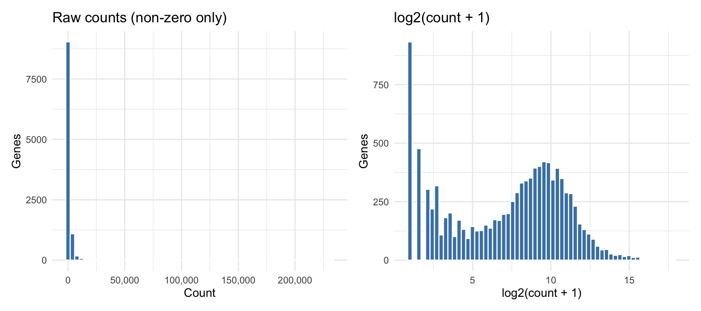

Row names are Drosophila gene IDs (e.g., FBgn0000003). Column names are sample identifiers. Each value is the number of sequencing reads that mapped to that gene in that sample – a non-negative integer.
1.2 Part b: Dimensions
cat("Genes: ", nrow(se), "\n")
Genes: 14599
cat("Samples:", ncol(se), "\n")
Samples: 7
The dataset has 14,599 genes and 7 samples.
1.3 Part c: Samples per condition
table(colData(se)$condition)
treated untreated
3 4
There are 3 treated and 4 untreated samples. The experiment is slightly unbalanced (3 vs. 4), but not severely so. This is common in RNA-seq experiments where one sample fails quality control or is lost during preparation.
1.4 Part d: Library type balance
table(colData(se)$condition, colData(se)$type)
paired-end single-read
treated 2 1
untreated 2 2
Two of the three treated samples are paired-end, while two of the four untreated samples are paired-end. So, there are some differences in the proportion of paired-end samples per treatment. On Day 12, we will run a model that will include type as a covariate in the design formula.
2 Exercise 2 – Count Distribution and Low-Count Filtering
2.1 Part a: Raw and log2-transformed count histograms
counts_s1 <-assay(se)[, 1]p1 <-tibble(count = counts_s1) |>filter(count >0) |>ggplot(aes(x = count)) +geom_histogram(bins =60, fill ="steelblue", color ="white") +scale_x_continuous(labels = scales::comma) +labs(title ="Raw counts (non-zero only)",x ="Count", y ="Genes") +theme_minimal()p2 <-tibble(count = counts_s1) |>filter(count >0) |>mutate(log2count =log2(count +1)) |>ggplot(aes(x = log2count)) +geom_histogram(bins =60, fill ="steelblue", color ="white") +labs(title ="log2(count + 1)",x ="log2(count + 1)", y ="Genes") +theme_minimal()p1 + p2

The raw count distribution is extremely right-skewed: the vast majority of genes have very low counts and a small number of highly expressed genes have counts in the tens of thousands. After log2 transformation, the distribution is much more symmetric and roughly bell-shaped. This demonstrates why log-transformation (or the variance-stabilizing transformation used for PCA) is necessary before any distance-based analysis – the raw scale is dominated by a small number of highly expressed genes.
2.2 Part b: Zero-count genes
n_zero <-sum(rowSums(assay(se)) ==0)n_total <-nrow(se)cat("Genes with zero total counts:", n_zero, "\n")
Genes with zero total counts: 2240
cat("Fraction of all genes: ", round(n_zero / n_total *100, 1), "%\n")
Fraction of all genes: 15.3 %
About 2,200 genes (roughly 15% of all genes in the annotation) have zero counts across all seven samples. These genes carry no information about differential expression and should be removed before modeling.
2.3 Part c: Filtering low-count genes
keep <-rowSums(assay(se)) >=10se_filtered <- se[keep, ]cat("Genes before filtering:", nrow(se), "\n")
Genes before filtering: 14599
cat("Genes after filtering: ", nrow(se_filtered), "\n")
Note that subsetting se[keep, ] automatically keeps the count matrix, column metadata, and row metadata synchronized – one of the key benefits of the SummarizedExperiment structure.
2.4 Part d: Density plot of log2 counts across samples
The seven density curves overlap closely in shape and position. No single sample is obviously shifted or shaped differently from the others, which is a good sign that there are no grossly outlying samples or failed libraries. The small differences between curves are expected and will be handled by DESeq2’s size factor normalization in tomorrow’s analysis.
PC1 separates the treated and untreated samples, capturing approximately 56% of the total variance. The treated samples (red) cluster on one side of PC1 and the untreated samples (blue) cluster on the other, confirming that the treatment has a strong and consistent effect on global gene expression.
3.3 Part d: Does library type drive any separation?
Looking at the shapes (circle = single-read, triangle = paired-end), there is a clear difference between library type along PC2. Here, single-read samples have large positive scores on PC2, while paired-end samples have large negative scores on PC2. This is worrisome, as it indicates that a non-biological element is having a notable impact on the data.
When technical variables dominate the PCA plot instead of the biological treatment, it indicates a quality problem: samples are clustering by batch or protocol rather than by biology, making the downstream differential expression analysis unreliable or uninterpretable. Here, we at least have condition have a clear impact (along with library type).